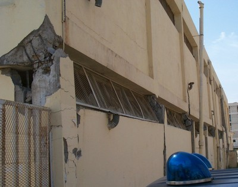
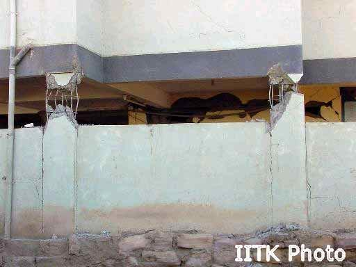

Short column [SHC]
A column of short length that will fail in shear rather than bend under lateral deformation when the column is overloaded during an earthquake. Includes captive columns, where wall elements (usually non-structural walls that are part of the enclosure system) effectively shorten some columns to less than the floor to beam height.
As a rule of thumb, a building has short columns if there are captive columns where the capturing non-structural walls reduce the height of unsupported length of the column by at least half, or where the capturing non-structural walls reduce the aspect ratio (height to depth ratio, where the depth of the column is measured parallel to the wall) of the column to less than 2:1.

Examples of short columns (A. Charleson, Seismic Design for Architects, Architectural Press 2008, p148 fig. 9.8).

Example of short columns caused by part-height masonry infill (A. Charleson, Seismic Design for Architects, Architectural Press 2008, p150 fig. 9.14).

Short Column in reinforced concrete construction, New Zealand (A. Charleson)

Captive columns in a reinforced concrete building damaged in the 2003 Boumerdes, Algeria earthquake (M. Farsi)

A building with captive columns suffered damage in the 2001 Bhuj, India earthquake (NICEE and IIT Kanpur)